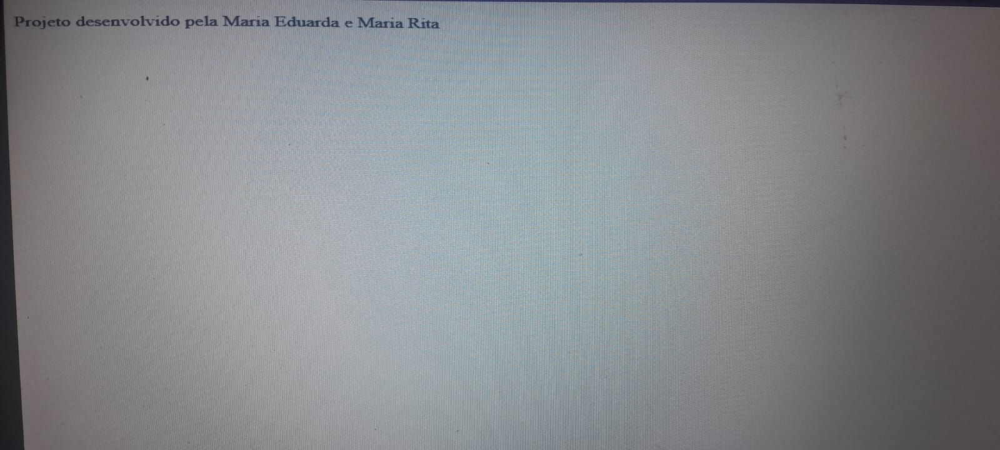

O projeto consiste em uma aplicação web interativa, desenvolvida com HTML, CSS, e JavaScript, que
simula uma experiência narrativa centrada no tema da Inteligência Artificial. O objetivo é
engajar os jogadores em um cenário fictício que aborda o avanço da IA e suas possíveis
consequências para a humanidade, destacando a importância da reflexão ética sobre a tecnologia.
O HTML estrutura o conteúdo da página, dividindo-o em seções como a tela inicial, caixa de
perguntas, alternativas de resposta, e o resultado final baseado nas escolhas do jogador. O CSS
é utilizado para estilizar a página, empregando um esquema de cores futurista e layout
responsivo para melhorar a experiência do usuário. JavaScript é usado para adicionar
interatividade ao jogo, manipulando DOM para atualizar o conteúdo da página conforme as
escolhas do jogador, e determinando o fluxo da narrativa através de uma série de perguntas e
respostas.
O HTML organiza o conteúdo en un cabeçalho com o título do site, seguido por uma divisão
principal (container) que apresenta o propósito do site e a coleção de livros em uma seção
flexível (lturos). Cada livro é destacado em seu próprio container (Livro), mostrando uma
imagem de capa, detalhes de livro e um link de compra. O design responsivo é garantido pelo
uso de uma meta tag viewport e um layout flexível que se adapta a diferentes tamanhos de
tela.
Os scripts JavaScript incluem módulos para gerar nomes aleatórios, definir as perguntas e as
lógicas de jogo, como iniciar o jogo, apresentar perguntas e alternativas, processar as escolhas
dos jogadores, e exibir o resultado final. Este design modular facilita a manutenção e a
expansão futura do jogo. A importância das ferramentas utilizadas (HTML, CSS, JavaScript) reside
na criação de uma experiência interativa que não apenas entretém, mas também educa os jogadores
sobre a complexidade ética e social da IA, incentivando a reflexão crítica sobre o papel da
tecnologia em nossas vidas.
